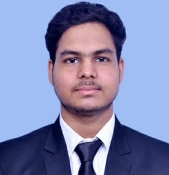

Education
- Bachelor of Technology - IIT Roorkee(2020-2024) CGPA-7.7
- Intermediate - KCM World School, Palwal (2018-2020)
- Matriculation - KCM World School, Palwal (2017-2018)
Internship
- Futures First - Quantitative Analyst (June 2023 - July 2023)
- Built a strong foundation in Quant Role.
- Provided with multiple projects to get an experience
Projects
- Traffic Light Controller for 8-way roundabout
- Developed and Simulated a controller for 8-way roundabout
- CNN Model for Arrythmia Detection and Classification
- Developed and Trained a CNN Model for Arrythmia Detection and it's classification in 4 classes
- Data Mining Techniques implementation in UCL income dataset
- Applied various Data mining and ML algorithms like SVM to detec and discriminate data
Achievements
- Secured AIR-1587 in JEE Advanced-2020
- Secured AIR-2169 in JEE Mains-2020
Extra Curricular and POR
- Competitive Programming
- Active member of many online judge platforms like codeforces, leetcode, atcoder, interviewbit
- Core Team Member | Half Marathon
- Headed the Management Committee and coordinated with about 70 volunteers
- Undergraduate Teaching Assistant
- Mentored 40-first year students throughout the semester